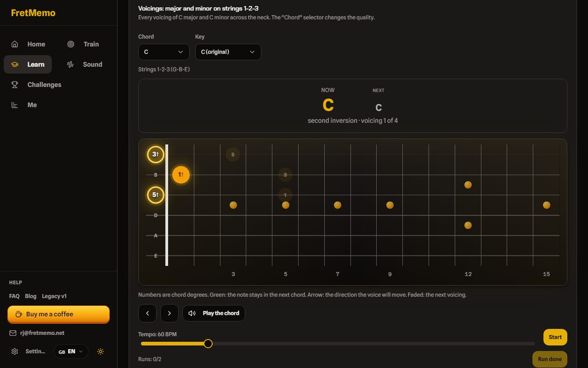

FretMemo's "Triads and voice leading" path teaches guitar triads in 12 free modules. You build the four triad qualities, learn root position and both inversions on four string sets, find them inside the CAGED shapes, and then move between chords by the shortest way through real progressions. It ends with triads in a solo. There's also a separate Triads tool for looking things up, and both run in the browser with no account.
Triads changed how I see the neck more than any scale did. This post explains a little of the theory first, because the path makes more sense once you know why it's built around string sets.

What a triad is, and what an inversion changes
A triad is three notes stacked in thirds: a root, a third and a fifth. The two thirds decide the quality. A major third with a minor third on top gives a major triad (C-E-G), minor then major gives a minor triad (C-Eb-G), two minor thirds give a diminished one (C-Eb-Gb) and two major thirds an augmented one (C-E-G#). Most bigger chords have one of these four inside. The major 7 and dominant 7 hold a major triad, the minor 7 a minor one, and the m7b5 and diminished 7 a diminished one. Sus chords have no third and the 7b5 has no triad at all, so they are the exceptions.
An inversion is the same three notes with a different one at the bottom. Root position has the root lowest (C-E-G), first inversion the third (E-G-C), second inversion the fifth (G-C-E). It's the same chord, but the top note changes, and the top note is what the ear hears as the melody. So choosing an inversion is choosing a melody note.
Why guitarists learn triads by string set
On three adjacent strings each triad note gets its own string, and the shape stays small enough to grab anywhere. The catch is standard tuning. Every pair of neighbouring strings is a fourth apart except G and B, which are a major third apart. On E-A-D and A-D-G there are only fourths, so those two sets share the same shapes. On D-G-B the third sits between the upper pair, and on G-B-E it sits between the lower pair, so each of those sets has its own shapes.
That is why the path teaches strings 1-2-3 (G-B-E), strings 2-3-4 (D-G-B) and the lower strings as separate modules. On each set the three inversions of a chord follow each other up the neck in a fixed order and repeat after 12 frets. C major on the top strings, for example, is G-C-E at the open position, C-E-G at frets 5, 5 and 3, and E-G-C at frets 9, 8 and 8.
The 12 modules
- Construction (1-3). "The four triad qualities", "Inversions" and "Triads in a key", where the seven chords of C major walk up one string set like a scale.
- Fretboard map (4-7). "Strings 1-2-3", "Strings 2-3-4", "Lower strings" (3-4-5 or 4-5-6, your choice) and "Triads in CAGED shapes", which finds the triads inside the five CAGED shapes.
- Voice leading (8-10). "Common tones", "Progressions by the shortest way" and "The cycle of fourths".
- In the solo (11-12). "Triads in the solo" and "Triad pairs".
Diminished and augmented triads get an extra exercise in each string-set module. The augmented one is symmetric, so its shape repeats every four frets, which is a nice thing to find out with your own fingers.
Voice leading: moving to the nearest chord
Voice leading means each note of a chord goes to the nearest note of the next one. Notes the two chords share stay put, and the others move by a half or a whole step. C and F share C, so going from C to F the C stays, E moves up to F and G moves up to A. Your hand barely moves, and three voices move like three short melodies.
The path drills this through I-V-vi-IV, ii-V-I and the Andalusian cadence (Am-G-F-E), and then through all twelve keys in the cycle of fourths. In the loops of "Progressions by the shortest way" the board shows the voicing nearest to the previous one, and the microphone checks that you play its top voice on beat one of each chord. The voicing exercises have no mic check. You play along as the metronome moves through the voicings and press "Run done".
How to practice triads in FretMemo
- Open fretmemo.net/improv/voicings, or click "Learn" and press "Start" on the "Triads and voice leading" card.
- Do the quizzes in "The four triad qualities" and "Inversions".
- In a voicing exercise, pick the "Chord" and look through the voicings with "<" and ">". "Play the chord" lets you hear each one.
- Press "Start". The metronome moves to the next voicing every bar and plays it, and you play along.
- Press "Run done" once it has gone through every voicing. Most exercises need 2 runs.
- In a loop, switch on "Verify with mic" where it appears and play the top voice on beat one.
- To look up a shape without an exercise, open the Triads theory tool, choose "Root" and "Quality", then switch the "String groups" and "Inversions" you want to see.
Triads in a solo
The last two modules turn chords into lines. In "Triads in the solo" you play only the three notes of each chord over C-Am-F-G, and the microphone checks beat one of every bar. "Triad pairs" plays F and G, two triads with no common notes, over Am7. Together they make a six-note scale (F A C G B D), and you play short groups from one triad, then the other.
If you came to FretMemo for the fretboard memorization game, this is a good next step, since every triad shape needs you to know which note sits where. Seventh chords build on the same ideas, and the drop 2 voicings post picks up from here. Triads also show up as a module of the improvisation path.
Limits
- Voicing exercises are not checked by the microphone. Only some loops check the top voice or the triad notes.
- The Triads theory tool shows major and minor triads only, on three string groups, and needs a tuning with at least five strings.
- Shapes and fret numbers follow standard tuning.
FAQ
What are triad inversions on guitar?
An inversion is the same three triad notes with a different note in the bass. Root position has the root lowest, first inversion the third and second inversion the fifth, so C major is C-E-G, E-G-C or G-C-E. On three adjacent strings each inversion has its own shape, and the three follow each other up the neck.
Which string sets should I learn triads on first?
Start with the top three strings, G-B-E, where triads sound clear above a bass player, then learn D-G-B. Those two sets have different shapes because the major third between the G and B strings sits in a different place. The lower sets, A-D-G and E-A-D, share one set of shapes because all their strings are a fourth apart.
How do I practice voice leading on guitar?
Keep the notes two chords share and move the other notes by a half or whole step to the nearest note of the next chord. Practice it through short progressions such as I-V-vi-IV, ii-V-I and Am-G-F-E on one string set. FretMemo's Triads path shows the nearest voicing for each chord and checks the top voice with your microphone in its progression loops.
What is a triad pair?
A triad pair is two triads with no notes in common, played in turn, often a whole step apart. Over Am7, the F and G triads give six notes, F A C G B D, that you can mix in short groups. FretMemo's Triads path has a module with a diagram, a loop and two licks for this pair.
Map triads on your neck
Open the Triads path and start with the four triad qualities, or jump to the strings 1-2-3 shapes.
Open the Triads path Free, no account, runs in the browser.